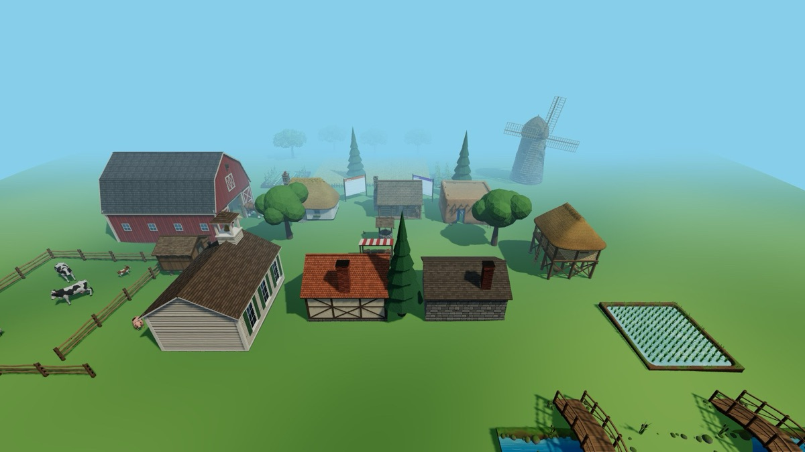
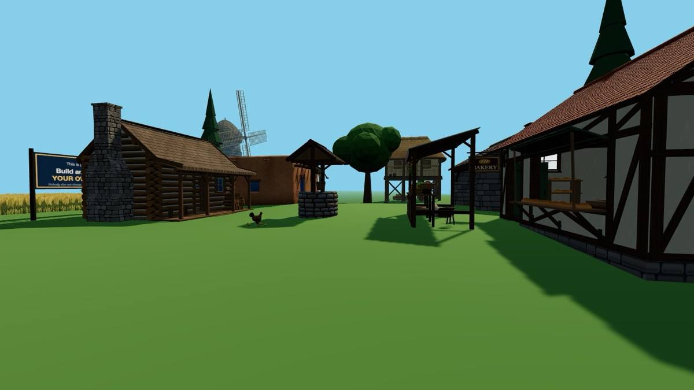
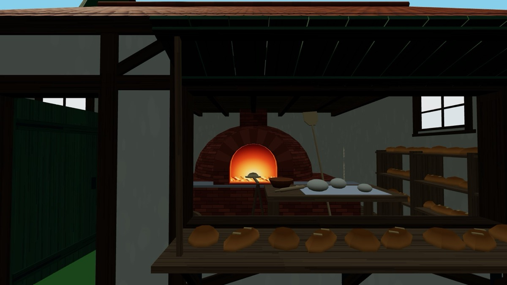

🏡 Build a Village
25 life-size pieces that fit together: homes, workshops, animals and crops. Plan where everything goes, feed everyone, then bring it to life with code.
Getting there: open My World, an empty field made for building. Then tap ☰ Menu → Model Database → 🏡 Build a Village, pick a piece and press Place. The address is edusim3dweb.com/app/?world=8. Opening a world link replaces the world you were in, so use Save World first if you want to keep it.
Moving a piece: click the orange 🔨 over it and choose Rotate/Move Shape. Drag the box to slide it, and drag a ring to turn it. Everything is real size, so walk through the doors and stand in the fields. You are 5 feet tall here.



The kit


Work and learning


Water, stores and edges


Animals


Six activities
1. Water comes first
Place the Village Well in the middle of your field. Every family will carry water from here by hand, in buckets. Now place two or three homes where the walk is short.
Think: walk from each front door to the well and count your steps with the arrow keys. Would you want to do that with a full bucket, several times a day? Where should animals not go, and why? Read the well's card to find out what Dr. John Snow discovered.
2. A home that suits the place
The four homes come from very different places. Decide where your village is: is it hot and dry, cold and wooded, wet and flooded, or mild and rainy? Then choose the home that fits, and be ready to explain why.
Think: what is each home made from? Would those materials be easy to find where your village is? Why does the Stilt House stand so high, and why would adobe be a poor choice beside a river? These pieces come from different countries and centuries, so a village that mixes them is your own invention, not a real place in history.
3. Feed everyone, and do the math
Place a Wheat Plot. Every plot is exactly 20 feet square, and it arrives with a green ▶. Press it once and three more plots appear in a row. To change how many, click the plot, choose Program and change the 3.
- repeat 3 times
- duplicate 20 ft away
Then place a Post and Rail Fence. Every section is exactly 10 feet long, and its ▶ lays three more. Rows always grow the same way across the world. So use rows for two sides of your plot, then place the other sections by hand and turn each one a quarter turn.
Work it out: how many fence sections go round one plot? Two plots side by side? Three in a row? What happens to the fence you need each time you add a plot? Now pretend each plot feeds two people for a year (this is a made-up rule, not a real harvest). How many plots does your village need?
Teacher: 8 sections, then 12, then 16. A row of plots adds 4 sections per plot, while area adds 400 square feet per plot, so perimeter and area grow differently.
4. Animals that move
Place a Dairy Cow, a Sheep or a Goat and press its green ▶. It walks, stops and turns. Click it and choose Program to read how.
- forever
- repeat 40 times
- move forward 0.05 feet
- wait 3 seconds
- rotate 35 degrees
Try: change 35 to 90. What shape does it walk now? Change 40 to 200. Can you find numbers that keep it inside your fence? There is no wall to stop it, so your numbers are the only fence that counts.
Teacher: at 90 degrees it walks a square. With 40 steps each side is 2 feet, and with 200 it is 10 feet. The Draft Horse's program goes up and down a 20-foot plot, and the Hen and Chicks wander in tight loops, so both are worth opening and changing too.
5. From field to loaf
A village is people relying on each other. Place a Wheat Plot, a Grain Windmill, a Village Bakery and a Market Stall. Then give each one a program, so each job starts when the last one finishes. (The wheat plot already has a program. Replace it.)
- wait 2 seconds
- say "wheat is ready"
- when an object says "wheat is ready"
- wait 2 seconds
- say "flour is ready"
- when an object says "flour is ready"
- wait 2 seconds
- say "bread is ready"
- when an object says "bread is ready"
- wait 2 seconds
- say "Fresh bread for sale!"
Think: press the green ▶ on the wheat plot and watch the news travel. What happens to the bakery if the wheat fails? Who else in your village depends on this chain? Can you add a job, such as the Raised Granary, into the middle of it?
6. A day in the village
Give the One-Room Schoolhouse a program that starts by itself at dawn:
- when the sun comes up
- say "Time for school!"
Now open ☰ Menu → Look Around and slide the Time of Day from night to morning. Add other things that happen at sunset or when it gets dark. What does each job do at dusk? When your village is done, walk through it and tell someone its story, then use Save World to keep it or to send it to a friend.